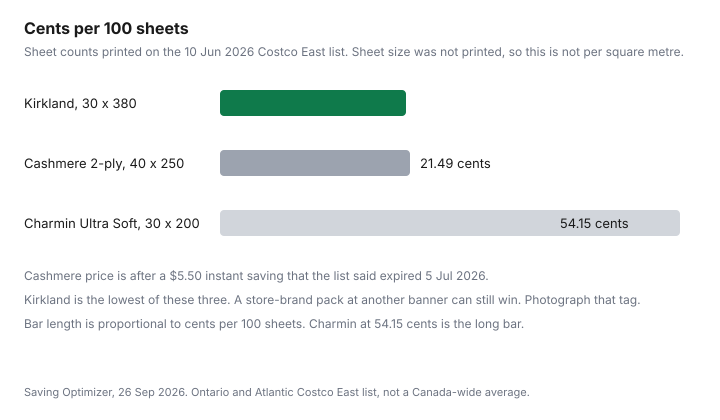

Household Items and Supplies · Canada
Toilet Paper and Paper Towel Unit Prices in Canada: How to Compare Cost per Sheet at Costco, Walmart, and No Frills
Roll counts are a marketing unit. Sheets are the unit you use. A "mega" roll that is shorter, or a double roll that is the old regular, makes two packs with the same roll count cost different amounts per wipe. This page is the division: price, sheets per roll, ply when it is printed, and the closet that has to hold the winner.
The sheet counts below are from the Costco East list posted 10 Jun 2026, Ontario and Atlantic, flyer window 8 Jun to 5 Jul 2026. Cashmere, Royale, Purex, No Name, and Great Value were the brands to try. Cashmere was on that list. Royale, Purex bathroom tissue, No Name, and Great Value were not, and Walmart.ca did not return a product price on 26 Sep 2026, so those rows are left out rather than guessed. Grocery grams are the unit-price guide. This page stays on paper.
Key takeaways
- On the 10 Jun 2026 Costco East list, Kirkland bathroom tissue was 30 rolls times 380 sheets, $23.99, which is 21.04 cents per 100 sheets. Charmin Ultra Soft was 30 times 200 sheets, $32.49, which is 54.15 cents per 100 sheets.
- Cashmere Premium, described as 2-ply, was 40 rolls times 250 sheets at $21.49 after a $5.50 instant saving the list said expired 5 Jul 2026. That is 21.49 cents per 100 sheets. Ply for Kirkland and Charmin was not printed on the list.
- Canada does not have a national mandatory unit-price rule. ISED says Quebec is the exception. Manitoba, on 22 Jun 2026, said it would introduce legislation. Shelf tags will keep disagreeing until a rule is in force where you shop.
- Sheet size was not on this list, so there is no cost per square metre here. If your package prints millimetres, multiply length by width, then by sheet count, before you compare a "larger sheet."
- U.S.-origin tissue can sit in the September 2026 counter-tariffs. Dentons, 9 Sep 2026, lists tissue paper (HS 4818) among 25 percent examples. Check the package origin. A Canadian-made roll is not that line.
Why roll counts lie: sheets per roll, sheet size, and ply
Two 30-roll packs on the same list are not the same product. Kirkland Signature bathroom tissue was 30 rolls of 380 sheets, 11,400 sheets. Charmin Ultra Soft was 30 rolls of 200 sheets, 6,000 sheets. The roll count matches. The sheet count does not. Anyone comparing "30 rolls" is comparing the cardboard, not the paper.
Ply is the second trap. Cashmere Premium is described on that list as 2-ply, 40 rolls of 250 sheets, 10,000 sheets. Kirkland and Charmin do not have a ply printed in the list line. A 1-ply sheet and a 2-ply sheet are not the same wipe even when the sheet count matches. If ply matters in your house, read the package. Do not borrow it from a different pack.
Sheet size is the third trap, and this list does not give it. A 380-sheet roll of small sheets can lose to a 200-sheet roll of large ones when you compare square metres. Until the package prints length and width, cost per 100 sheets is the honest comparison you can finish in the aisle. Cost per square metre waits for the dimensions. The shrinkflation guide is the same idea in grams: the sticker stayed, the contents moved.
The cost-per-100-sheets formula with worked Canadian examples (Kirkland, Cashmere, Royale, Purex, No Name, Great Value)
Formula: rolls times sheets per roll equals sheets. Price divided by sheets, times 100, equals cost per 100 sheets. Kirkland: 30 times 380 is 11,400. $23.99 divided by 11,400 times 100 is 21.04 cents. Cashmere: 40 times 250 is 10,000. $21.49 divided by 10,000 times 100 is 21.49 cents. Charmin: 30 times 200 is 6,000. $32.49 divided by 6,000 times 100 is 54.15 cents. Kirkland and Cashmere are close. Charmin on this list is more than double Kirkland per 100 sheets, because the roll is shorter and the pack costs more.
Paper towels use the same formula. Kirkland paper towel, 12 times 160 sheets, 1,920 sheets, $24.99, is $1.30 per 100 sheets. Sponge Towels Premium, 12 times 106 sheets, 1,272 sheets, $21.99 after a $6.00 instant saving the list said expired 5 Jul 2026, is $1.73 per 100 sheets. Bounty Plus, 12 times 91 sheets, 1,092 sheets, $32.49, is $2.98 per 100 sheets. Cascades paper towel is priced by length, 12 times 62.48 m at $14.99, which is 749.76 m and 2.00 cents per metre of that stated length. It is not in the per-100-sheets column because the list gave metres, not sheets.
Royale, Purex bathroom tissue, No Name, and Great Value are named in the heading because those are the packs to test on a Canadian shelf. They are not in the table. No price for them was on a page opened 26 Sep 2026. When you see them, use the formula and write the date. A No Frills or Walmart tag can beat 21.04 cents. This list cannot prove that it does.
| Product | Pack | Sheets or length | Ply on the list | Price | Unit cost |
|---|---|---|---|---|---|
| Kirkland Signature bathroom tissue | 30 rolls | 380 sheets each, 11,400 total | Not stated | $23.99 | 21.04 cents per 100 sheets |
| Cashmere Premium | 40 rolls | 250 sheets each, 10,000 total | 2-ply | $21.49 after a $5.50 instant saving the list said expired 5 Jul 2026 | 21.49 cents per 100 sheets |
| Charmin Ultra Soft | 30 rolls | 200 sheets each, 6,000 total | Not stated | $32.49 | 54.15 cents per 100 sheets |
| Kirkland Signature paper towel | 12 rolls | 160 sheets each, 1,920 total | Not stated | $24.99 | $1.30 per 100 sheets |
| Sponge Towels Premium | 12 rolls | 106 sheets each, 1,272 total | Not stated | $21.99 after a $6.00 instant saving the list said expired 5 Jul 2026 | $1.73 per 100 sheets |
| Bounty Plus | 12 rolls | 91 sheets each, 1,092 total | Not stated | $32.49 | $2.98 per 100 sheets |
| Cascades paper towel | 12 rolls | 62.48 m each, 749.76 m total | Not stated | $14.99 | 2.00 cents per metre of stated length, not per sheet |
Unit-price rules in Canada: what Quebec requires, Manitoba's 2026 plan, and why shelf tags differ by banner
ISED's Office of Consumer Affairs page on per-unit pricing, opened 26 Sep 2026, says there is no mandatory requirement to post per-unit prices in the current Canadian marketplace, other than in Quebec. Outside Quebec, retailers decide whether to show a unit price and how large the type is. The page says the per-unit figure is often in a much smaller font than the package price, and that banners do not all use the same measure. That is why one store's shelf tag can show a price per 100 sheets and the next store shows nothing, or shows a price per roll.
In Quebec, the same ISED page says the per-unit price font can be smaller than the selling price, but the font size is set out in the Consumer Protection Act. This draft did not open the section number, so it does not cite one. If a Quebec tag looks optional, it is still worth reading the unit line, and it is worth knowing the rule is provincial. The rest of the country does not inherit it automatically.
Manitoba is a plan, dated. CBC's report posted 22 Jun 2026 says Finance Minister Adrien Sala described legislation that would require grocery stores to show unit prices, such as a price per 100 grams, so shoppers can see shrinkflation. The story says Manitoba would join Quebec and other jurisdictions, and that the legislation would be introduced in the next session of the legislature. It does not say the bill had passed. A Winnipeg grocer quoted in the story already labelled some items and doubted customers read them. Until you can point at a Manitoba rule in force, treat a Manitoba shelf tag the way you treat an Ontario one: use it if it is there, and do the division yourself if it is not.
| Where | What the opened page says |
|---|---|
| Federal | ISED: no mandatory per-unit price posting in the current Canadian marketplace, other than Quebec. Display outside Quebec is voluntary and not standardised. |
| Quebec | ISED: the exception. Per-unit font size can be smaller than the price, and that size is set in the Consumer Protection Act. Section number not cited here. |
| Manitoba | CBC, 22 Jun 2026: the province plans to introduce legislation requiring unit prices at grocery stores. Described as a next-session plan, not as a law already in force. |
| Other provinces | No additional provincial mandate was on the ISED page. A banner may still print a unit price. The unit may not match the store across the street. |
Shrinkflation checks: fewer sheets, same price
Shrinkflation on paper is a lower sheet count, a shorter metre count, or a smaller sheet, at a price that feels familiar. One list from June 2026 cannot show the "before." You need last year's package, or a note in your phone. Write brand, rolls, sheets per roll, ply, sheet size if printed, price, and date. Next time, compare the note to the tag before you call it the same deal.
The check is the same one the grocery guide uses for a cereal box. The package can stay the same height while the contents drop. For paper towels, a "12=24" claim is not a sheet count. Turn it back into sheets per roll. If the new roll has 80 sheets and the note says 106, you did not get a deal by standing in the same aisle. You got a shorter roll. Costco versus No Frills is where that shorter roll either stays in the warehouse cart or goes back to the discounter.
Stock-up math vs storage space in apartments and condos
Kirkland's bathroom pack is 30 rolls. At an illustrative one roll a week, that is 30 weeks of paper, about seven months. At two rolls a week, it is 15 weeks. Those rates are not a Canadian average. They are the worksheet. If the hall closet cannot hold 30 rolls, the pack's 21.04 cents is a theoretical price. The practical price includes whatever you do with the overflow.
Overflow that moves into a storage locker is no longer a paper saving. The self-storage guide prices the locker. A locker that exists only because of bulk paper, bulk detergent, and a spare set of towels has a monthly fee that belongs on top of the cents per 100 sheets. Split a pack with another household if the rules of the warehouse membership allow the other person to be there. Do not buy the 30-roll pack "to save" and then pay to house it.
Apartments also have a moisture problem the unit price ignores. Paper stored against an outside wall can take on damp. A damaged roll is a roll you paid for and did not use. The cheapest 100 sheets are the ones you finish. The detergent guide uses the same test on a jug that will not fit under the sink.
Paper-goods tariffs note: Sept 2026 counter-tariffs cover some U.S.-origin tissue—check the package origin
Dentons' note dated 9 Sep 2026 says Canada's counter-tariffs on U.S.-origin goods took effect at 12:01 a.m. on 8 Sep 2026, under orders made 4 Sep 2026. The rates are 15, 25, or 50 percent depending on the tariff item. Origin is the U.S.-origin test under the marking regulations for CUSMA countries, not the country the truck departed from. Goods already in transit to Canada on 8 Sep 2026 are an exception the note describes. The surtax is the importer's. It can show up later in a shelf price. It does not attach because a brand sounds American.
On tissue, read the note's examples and then the package. Dentons lists tissue paper (HS 4818) among examples in the 25 percent schedule, and lists pulp, paper, and paperboard (HS 4702, 4803 to 4823) among examples in the 50 percent schedule. The same heading can contain different rates. Dentons says the Finance Canada list is a working reference and the Schedule to the Customs Tariff is the legal authority. This draft did not open that Finance list, because the canada.ca page did not load. Do not treat "paper towels" as automatically 25 percent. Read the origin on the package you are holding. A roll made in Canada is outside a U.S.-origin surtax. A roll that is U.S.-origin can be inside it, at the rate for its tariff item, if no remission applies. Remission rules are in the same Dentons note. They are not a household coupon.

Sources & date stamps
- Costco East cleaning list, posted 10 Jun 2026: Kirkland bathroom tissue 30 times 380 sheets, $23.99; Cashmere Premium 2-ply, 40 times 250, $21.49 after a $5.50 instant saving the list said expired 5 Jul 2026; Charmin Ultra Soft 30 times 200, $32.49; Kirkland paper towel 12 times 160, $24.99; Sponge Towels 12 times 106, $21.99 after a $6.00 instant saving the list said expired 5 Jul 2026; Bounty Plus 12 times 91, $32.49; Cascades 12 times 62.48 m, $14.99. Opened 26 Sep 2026.
- ISED Office of Consumer Affairs, "Comparing food prices – Per unit pricing," opened 26 Sep 2026: no mandatory per-unit posting other than Quebec; Quebec font size set in the Consumer Protection Act; voluntary and inconsistent display elsewhere.
- CBC News, Manitoba grocery study, posted 22 Jun 2026: unit-pricing legislation described as a plan for the next legislative session, tied to shrinkflation. Not described as passed.
- Dentons, "Canada's September 2026 counter-tariffs on US goods," 9 Sep 2026: in force 8 Sep 2026; U.S.-origin; tissue paper HS 4818 cited as a 25 percent schedule example; pulp and paper HS 4702 and 4803 to 4823 cited among 50 percent examples; tariff-item rates; Finance list is informational; Customs Tariff schedule is the legal text. Finance list itself was not opened.
Frequently asked questions
Why is roll count a bad way to compare toilet paper?
A 30-roll pack can hold fewer sheets than a 30-roll pack beside it. On the Costco East list posted 10 Jun 2026, Kirkland was 30 rolls of 380 sheets and Charmin Ultra Soft was 30 rolls of 200 sheets. Same roll count, 11,400 sheets versus 6,000. Ply and sheet size still sit outside that count.
How do I calculate cost per 100 sheets?
Multiply rolls by sheets per roll. Divide the price by that sheet total, then multiply by 100. Kirkland at $23.99 for 11,400 sheets is 21.04 cents per 100 sheets. If the package prints sheet size, you can go on to square metres. This list did not print sheet size.
Does Canada require stores to show unit prices?
Innovation, Science and Economic Development Canada's unit-pricing page says there is no mandatory requirement to post per-unit prices in the current Canadian marketplace, other than in Quebec. Quebec's per-unit font size is set in the Consumer Protection Act. Manitoba's finance minister said on 22 Jun 2026 that the province would introduce unit-pricing legislation. That CBC report describes a plan, not a rule already in force.
How do I spot shrinkflation on paper towels?
Keep the last sheet count, or the last metres, next to the price. Shrinkflation is the same sticker on a shorter roll. One flyer snapshot cannot show the change. The grocery shrinkflation guide is the habit. Paper goods use sheets or metres instead of grams.
Is buying the biggest pack always cheaper?
Only if you will finish it and the cents per 100 sheets actually win. A 30-roll pack in a condo is 30 weeks of paper at one roll a week, which is an illustration, not a survey. If the spare rolls become storage you pay for, the unit price was not the full cost. Run the division, then look at the closet.